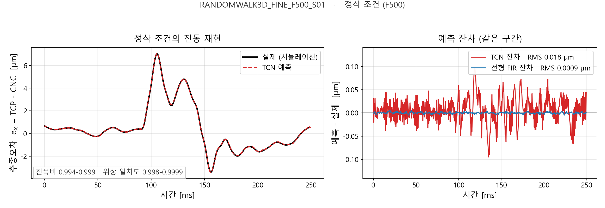

CNC 지령에서 TCP 궤적을 예측하는 파이프라인
지령 좌표(CNC)만으로 공구 끝점의 실제 궤적(TCP)을 예측합니다. 신경망(TCN)과 선형 기준선(FIR)을 같은 데이터·같은 분할에서 나란히 돌려 비교합니다.
01왜 TCN인가
구조를 처음부터 설명하기보다, 이 문제의 어떤 성질이 이 구조를 고르게 했는지로 정리합니다.
예측 대상은 추종오차 e = TCP − CNC입니다. 지령이 들어가면
서보와 기구가 그 지령을 쫓아가고, 쫓아가지 못한 만큼이 공구 끝에서 변위로 나타납니다.
이 관계는 시간축 위의 신호 대 신호 사상이고, 네 가지 성질을 갖습니다.
TCN(Temporal Convolutional Network)은 그 네 가지를 학습으로 배우는 것이 아니라
구조로 강제할 수 있는 가장 단순한 모델이라서 선택했습니다.
인과성 — causal convolution
서보는 미래 지령을 모릅니다. 현재 TCP는 과거 지령만으로 결정됩니다. 합성곱 커널을 과거 쪽으로만 패딩하면 미래를 보는 경로가 아예 없어집니다.
긴 메모리 — dilation
임펄스 응답의 꼬리가 τ ≈ 50–70 ms로 감쇠해 510 ms까지 필요합니다.
팽창률을 1,2,…,128로 키우면 8개 블록만으로 수용영역 1,021 샘플을 확보합니다.
정지 조건 — bias 제거
지령이 멈추면 오차도 0이어야 합니다. 모든 합성곱에서 편향을 빼면
f(0) = 0이 수치적으로 보장됩니다. 학습으로 근사할 필요가 없습니다.
좌표 무관 — 증분 입력
입력이 좌표가 아니라 증분 ΔCNC라 작업좌표계 오프셋이 차분에서 소거됩니다. 실측상 오프셋 108 mm까지 출력이 바뀌지 않습니다.
구조 요약
잔차 블록 8개를 쌓고, 각 블록은 커널 5의 causal convolution 두 개와 ReLU로 구성됩니다. 팽창률은 블록마다 두 배가 되고, 수용영역은
마지막에 6채널 입력에서 3채널 출력으로 가는 선형 직결 경로(linear skip)를 더합니다. 이 경로는 그 자체로 FIR 필터와 같은 함수 클래스라, 비선형 가지는 그 위의 잔차만 담당하면 됩니다.
다른 구조를 쓰지 않은 이유
- RNN / LSTM — 수용영역이 설계값으로 드러나지 않고, 0.5 ms 간격 수만 스텝을 순차 전개해야 해 학습이 느립니다. TCN은 수용영역이 위 식으로 못 박히고 시간축으로 병렬화됩니다.
- Transformer — 시퀀스 길이가 2~3만이라 어텐션 비용이 현실적이지 않고, 이 문제의 의존성은 전역이 아니라 국소적(최근 510 ms)입니다.
02데이터와 입출력
데이터: 구 시뮬레이터로 생성한 DOE 968런 중 유효 844런을 사용했습니다. 신규 시뮬레이터 데이터가 아니며, 신규 환경에서는 재식별·재학습이 필요합니다.
입력 — 6채널
지령 증분을 급속이송 구간과 절삭 구간으로 나눠 6채널로 만듭니다. 두 마스크는 서로 배타적이므로, 이 구성은 “G00·G01에 서로 다른 필터를 두고 탭 안에서 합산”하는 것과 정확히 같습니다.
출력 — 3채널
두 좌표를 float64로 뺀 뒤 µm로 바꿉니다. 320 mm 좌표에 µm를 더한 값은 float32로 표현되지 않지만, 차이값인 e는 표현됩니다.
| 항목 | 값 |
|---|---|
| 시간 격자 | 0.5 ms 균일 (2,000 Hz) |
| 입력 / 출력 | 6채널 → 3채널 |
| 수용영역 | 1,021 샘플 = 510.5 ms |
| G00 / G01 구분 | feed 열 기준, 급속이송 값은 데이터에서 자동 검출 |
| 손실 제외 구간 | 각 크롭의 앞 1,021 샘플(이력 없음), 빈 행, 급속 구간 가중 0.1 |
03준비 — 어떤 파일이 어디에
CNC2TCP/
├─ Runs/ ← 시뮬레이션 결과 (git 추적 안 함)
│ ├─ DOE_0001_RANDOMWALK3D_FINE_F500_S01/
│ │ └─ 412_op1_out.csv ← 파이프라인이 읽는 유일한 파일
│ ├─ DOE_0002_.../
│ └─ ...
├─ code/
│ ├─ config.py 모든 경로·하이퍼파라미터
│ ├─ scripts/ 00 ~ 11, 번호가 곧 실행 순서
│ ├─ tcn_cnc2tcp/ 라이브러리
│ └─ work/ 산출물 전부가 여기로
├─ .venv/
└─ requirements.txt런 폴더 안의 *_in.json, *_out.json, *.nc는 읽지 않습니다.
*_out.csv 하나만 있으면 됩니다. 필요한 열은 다음과 같고, 나머지 열은 무시됩니다.
| 열 | 단위 | 쓰임 |
|---|---|---|
| time | s | 격자 균일성 확인, 필요 시 스플라인 리샘플 |
| feed | mm/min | G00 / G01 구분 |
| block# | – | 블록 단위 지표 집계 |
| cnc_x, cnc_y, cnc_z | mm | 입력 (증분으로 변환) |
| tcp_x, tcp_y, tcp_z | mm | 정답 (e = TCP − CNC) |
Runs/가 다른 드라이브에 있으면 경로를 환경변수로 지정합니다. 모든 스크립트는
--set key=value로 config.py의 어떤 값이든 덮어쓸 수 있습니다.
$env:TCN_RUNS_DIR = "D:\Runs"
python code\scripts\05_train.py --set train.epochs=400 --set model.channels=6404실행 순서
번호가 곧 순서입니다. 06이 07보다 먼저인 데에는 이유가 있습니다 — 아래에 적었습니다.
환경 확인 00_check_env.py
GPU·CUDA·의존성 버전을 찍고, 모델을 한 번 만들어 인과성과 f(0)=0을 자가 점검합니다.
python code\scripts\00_check_env.py- 결과
- 콘솔 출력만. self-test OK가 나오면 다음 단계로.
런 스캔 01_scan_runs.py
모든 런 폴더의 CSV를 읽어 길이·격자·피드·경로 특성을 표로 만듭니다. 급속이송 값도 여기서 데이터로부터 검출합니다.
python code\scripts\01_scan_runs.py- 필요
Runs/의*_out.csv- 결과
work/meta/index.csv(런별 한 줄),work/meta/machine.json
학습 대상 선별 02_select_doe.py
어떤 프로그램으로 학습할지 고릅니다. 기준이 세 가지 있습니다.
# 전부 사용 — 신경망에는 이게 가장 낫습니다
python code\scripts\02_select_doe.py --criterion all --set select.tag=all
# 여기(excitation) 커버리지 기준으로 50종
python code\scripts\02_select_doe.py --criterion excitation --set select.tag=r4 --set select.n_programs=50- 필요
work/meta/index.csv- 결과
work/meta/selection_<tag>.txt,ranking.csv
에폭당 크롭 수가 steps_per_epoch × batch_size로 고정이라
프로그램을 몇 개 쓰든 에폭 시간이 같습니다. 844런 전체를 써도 추가 비용은
캐시 1회(약 15분)와 RAM 1.5 GB뿐이고, 다양성이 최대가 됩니다.
로더 검증 03_validate_loader.py 선택
증분에서 좌표를 되돌려 원본과 맞는지, 리샘플 오차가 허용 범위인지 확인합니다.
python code\scripts\03_validate_loader.py --selection all- 결과
work/reports/loader_validation.csv
과적합 테스트 04_overfit_test.py 선택
프로그램 3개만으로 일부러 과적합시켜 봅니다. 여기서 오차가 안 내려가면 본 학습을 돌릴 이유가 없습니다.
python code\scripts\04_overfit_test.py --n 3 --epochs 40- 결과
work/runs/overfit/, 콘솔에 수렴 여부
본 학습 05_train.py
프로그램 단위로 train/val/test를 나누고(윈도우 단위 분할은 아예 경로가 없습니다) 학습합니다. 체크포인트는 절삭 구간 검증 오차로 고릅니다.
python code\scripts\05_train.py --selection all --set train.name=tcn_all ^
--set model.dilations=1,2,4,8,16,32,64,128 ^
--set model.linear_skip=True ^
--set train.epochs=120- 필요
- 선별 파일, GPU
- 결과
work/runs/<name>/—best.pt,split.json,history.json,config.json,training_curve.png- 참고
- 844런 · 120 epoch 기준 약 52분 (RTX 3060 12GB)
FIR 기준선 식별 06_fir_baseline.py
같은 분할·같은 입력으로 선형 FIR을 식별합니다. 학습이 아니라 닫힌 해라 1,021탭에서 약 13초입니다.
python code\scripts\06_fir_baseline.py --run tcn_all- 필요
work/runs/<name>/split.json- 결과
fir_baseline.npz,metric9_fir_*.csv
반드시 07보다 먼저. 07이 fir_baseline.npz를 찾아
기존 그림 안에 FIR 곡선을 겹쳐 그리고 지표 9 표를 만듭니다. 순서를 바꾸면 FIR 없이 평가됩니다.
평가 07_evaluate.py
테스트 분할에서 지표 1~5와 그림 3종을 만들고, 예측 TCP를 CSV로 내보냅니다.
python code\scripts\07_evaluate.py --run tcn_all- 필요
- 체크포인트, (권장)
fir_baseline.npz - 결과
work/reports/<name>/test/— 지표 CSV,fig1~3_*.png,summary.json,tcp/*.csv
TCN vs FIR 비교 08_compare_fir_tcn.py
같은 테스트 프로그램에서 두 모델을 나란히 세우고, 진동 그림(전체·확대·잔차·스펙트럼)을 그립니다. 07이 내보낸 CSV를 읽으므로 torch도 GPU도 필요 없습니다.
python code\scripts\08_compare_fir_tcn.py --run tcn_all- 필요
- 07의
tcp/*.csv - 결과
work/reports/<name>/comparison/—comparison_per_program.csv,coverage.csv,fig_vibration_*.png
선택 단계
| 파일 | 무엇을 재나 |
|---|---|
| 09_sweep_ndoe.py | 프로그램 수를 늘릴 때 오차가 어디서 포화하는지 |
| 10_sweep_rf.py | 수용영역(100 / 200 / 300 ms …)을 바꿀 때의 오차 |
| 11_resample_robustness.py | 시간 격자가 흐트러진 입력에 대한 강건성 |
| infer.py | 임의 타임스탬프 → 표준 격자 → 예측 → 원래 타임스탬프로 역보간 |
05성능
홀드아웃 127개 프로그램. 학습에도 검증에도 쓰이지 않은 프로그램들이며,
지표는 e = TCP − CNC 벡터 오차의 RMSE입니다.

비교 대상인 FIR이란
같은 6채널 입력에서 같은 3채널 출력으로 가는 선형 유한임펄스응답 필터입니다. 축마다 1,021탭 × 6채널 = 6,126개 계수를 가지며, 예측은 단순한 합성곱입니다.
학습하지 않습니다. 정규방정식을 한 번 쌓고 Cholesky 분해로 한 번에 풉니다. 설계행렬이
합성곱 행렬이라 XᵀX가 블록-Toeplitz 구조를 가지므로, 상호상관을 FFT로 계산해
행렬을 직접 곱하지 않습니다 — 그래서 6,126 × 3 = 18,378개 계수를 13초에 구합니다.
이 데이터에서 CNC→TCP 관계가 사실상 정확히 선형이기 때문에, FIR은 단순한 참고치가 아니라 이 문제의 이론적 최적해입니다. 비교의 기준으로 쓰는 이유가 여기 있습니다.
| 모델 | 중앙값 | p90 | 최대 | 정삭 구간 중앙값 | 식별 / 학습 |
|---|---|---|---|---|---|
| TCN | 0.118 | 0.764 | 6.14 | 0.044 | 52 분 |
| 선형 FIR | 0.0013 | 0.0036 | 0.0129 | 0.0011 | 13 초 |
단위 µm. 정삭 구간은 절삭이송 1,500 mm/min 이하 67개 프로그램.

읽는 법
- 정삭 구간에서는 충분합니다. 67개 중 66개가 0.5 µm 이내이고, 중앙값은 0.044 µm입니다. 0.5 µm를 넘는 1개는 서브밀리미터 반전 경로입니다.
- 진동은 재현됩니다. 진폭비가 0.994–0.999, 파워가중 위상 일치도가 0.998–0.9999로, 크기와 위상 모두 맞습니다.
- 큰 오차는 고이송에 몰립니다. 3 µm를 넘는 경우는 10,000 mm/min의 두 프로그램뿐이고, 0.5 µm를 넘는 10개는 전부 3,000 mm/min 이상입니다.
- FIR과는 약 100배 차이가 납니다. 정확도의 한계가 아니라 최적화의 한계입니다 — 선형 해가 신경망의 가설공간 안에 들어 있는데도 경사하강이 거기까지 수렴하지 못합니다. 문제의 조건수가 매우 크기 때문입니다.
주의: 여기서 말하는 오차는 TCP 궤적 예측의 오차입니다. 형상오차(form error)가 아닙니다. 형상오차를 말하려면 예측한 TCP를 외부 형상 파이프라인에 넣어 실제 가공면과 비교해야 하고, 그 단계는 이 저장소 밖에 있습니다.